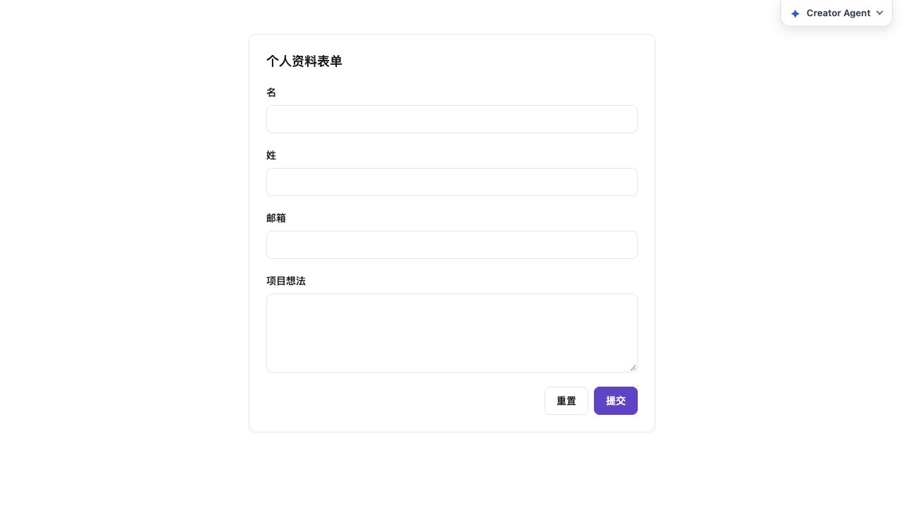
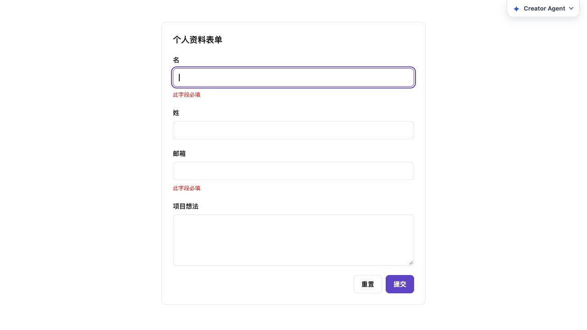
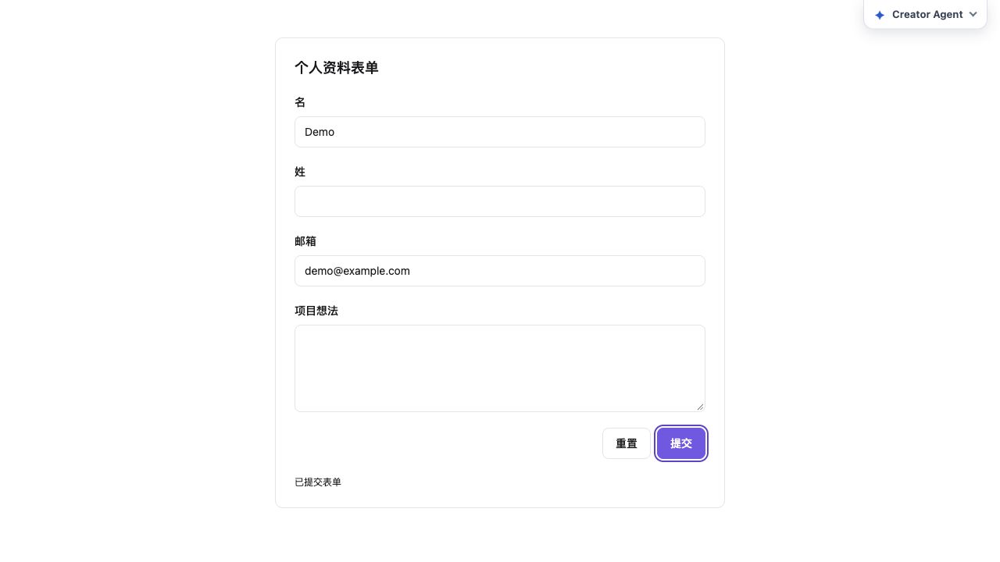
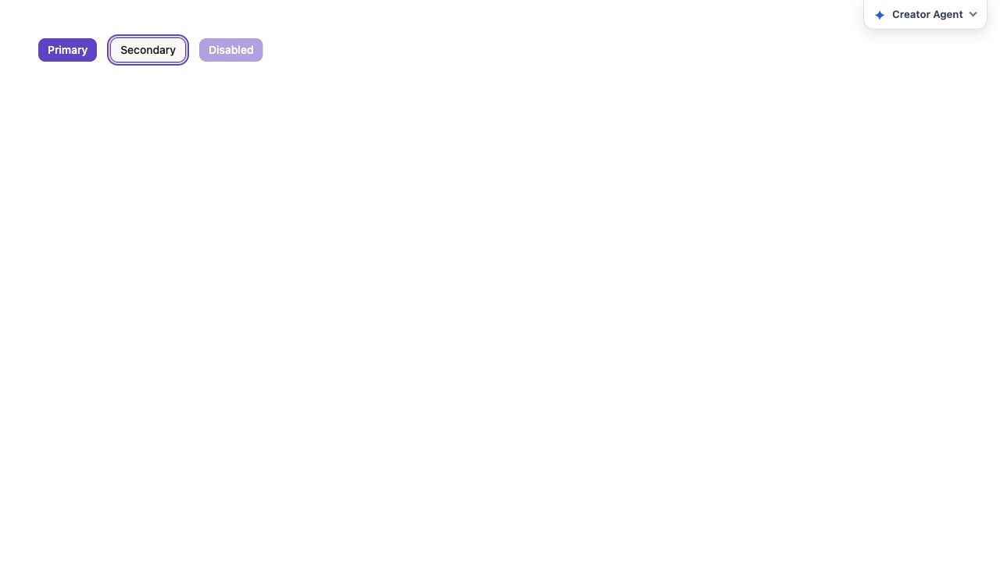
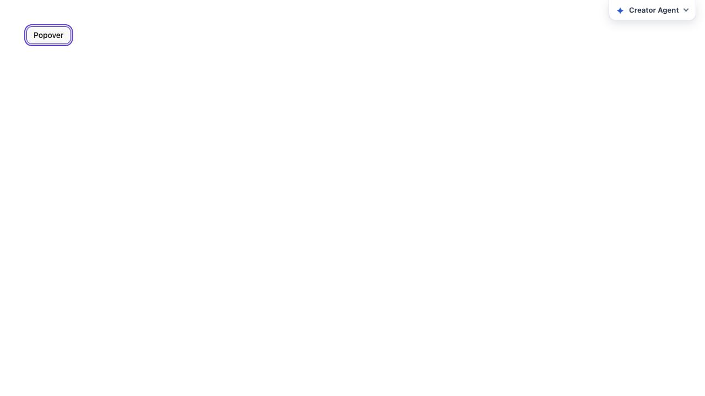
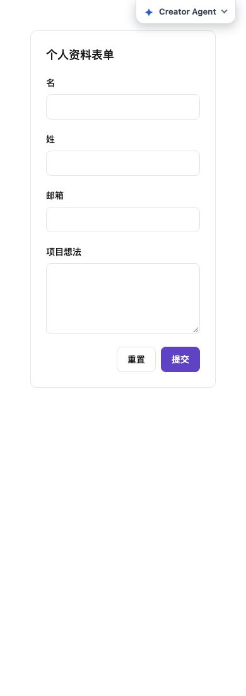
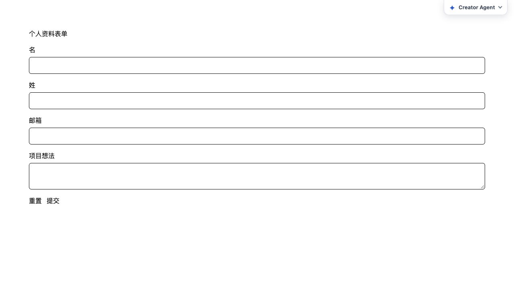
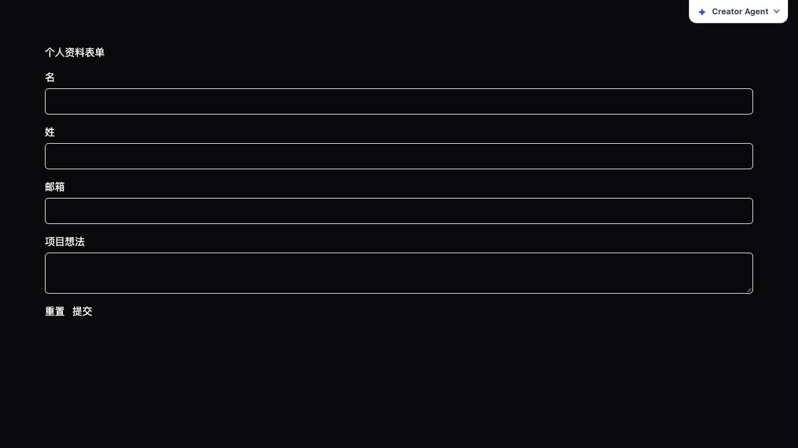

form-idle

Violet form: 576px maximum, 40px controls, white card.
8 张真实组件截图；点击查看原始尺寸。验证报告 · 之前的46张截图

Violet form: 576px maximum, 40px controls, white card.

Required field validation and real keyboard input focus.

Real successful submission with submit keyboard focus.

Keyboard focus on secondary action: 2px solid outline, 2px offset.

Escape restores focus to actual Popover trigger; solid focus outline.

Actual 390px iframe; scrollWidth=390, form width=294px.

Light retains the original demo CSS; Violet sizing rules do not match.

Dark retains the original demo CSS; Violet sizing rules do not match.